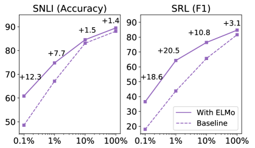

# 方式1：使用 AllenNLP 的 ELMo（原始实现）
from allennlp.modules.elmo import Elmo, batch_to_ids
# 加载预训练 ELMo 模型
options_file = "https://allennlp.s3.amazonaws.com/models/elmo/2x4096_512_2048cnn_2xhighway/elmo_2x4096_512_2048cnn_2xhighway_options.json"
weight_file = "https://allennlp.s3.amazonaws.com/models/elmo/2x4096_512_2048cnn_2xhighway/elmo_2x4096_512_2048cnn_2xhighway_weights.hdf5"
# num_output_representations: 需要多少组不同的 ELMo 表示
# （每组有独立的 s_j 和 gamma）
elmo = Elmo(options_file, weight_file, num_output_representations=1, dropout=0.5)
# 准备输入：将词转换为字符 ID
sentences = [
["I", "deposited", "money", "at", "the", "bank"],
["I", "fished", "along", "the", "river", "bank"]
]
character_ids = batch_to_ids(sentences) # [batch=2, max_len=6, max_chars=50]
# 前向传播
embeddings = elmo(character_ids)
# embeddings['elmo_representations']: list of [batch, seq_len, 1024]
# embeddings['mask']: [batch, seq_len]
elmo_vectors = embeddings['elmo_representations'][0]
# elmo_vectors.shape: [2, 6, 1024]
# 对比两个句子中 "bank"（位置5）的 ELMo 表示
bank_s1 = elmo_vectors[0, 5, :] # 句子1中的 bank
bank_s2 = elmo_vectors[1, 5, :] # 句子2中的 bank
import torch.nn.functional as F
similarity = F.cosine_similarity(bank_s1.unsqueeze(0), bank_s2.unsqueeze(0))
print(f"两个 'bank' 的余弦相似度: {similarity.item():.4f}")
# 预期结果：约 0.6-0.7（明显低于 1.0，说明 ELMo 区分了两个含义）第11章：上下文词向量——ELMo
从静态词典到动态阅读：让词的表示随语境而变
NLP
Deep Learning
Pre-training
ELMo
Contextual Embeddings
ELMo：第一个生成上下文相关词向量的预训练模型。通过深层双向LSTM语言模型，让同一个词在不同语境中拥有不同的向量表示，标志着从’词典式’到’阅读式’词向量的范式转变。
核心问题：如何让词的向量表示随上下文而变化，使得同一个词在不同语境中拥有不同的表示？
历史坐标：2018 | Peters et al. “Deep contextualized word representations” | 从静态词向量到上下文词向量的范式转变
Tip本章参考来源
0.1 论文
- Peters et al. (2018) “Deep contextualized word representations” (arXiv:1802.05365) — 参考了 Section 3（biLM架构、ELMo公式）、Section 5（层级分析）、Figure 1-2、Table 1-6
- Peters et al. (2017) “Semi-supervised sequence tagging with bidirectional language models” (TagLM) — 参考了与ELMo的对比
- McCann et al. (2017) “Learned in Translation: Contextualized Word Vectors” (CoVe) — 参考了设计路线对比
0.2 教材
- D2L Section 15.8 (BERT) — 参考了ELMo/GPT/BERT对比图 (
elmo-gpt-bert.svg) 和教学组织方式 - SLP3 Chapter 10 (Masked Language Models and Contextual Embeddings) — 参考了上下文词向量的动机铺设
0.3 课程
- Stanford CS224N Lecture 14 (2020) “Contextual Word Representations” — 参考了”shallowly bidirectional”的讲解角度、TagLM→ELMo→ULMFiT→BERT的教学递进、feature-based vs fine-tuning对比框架
- Jay Alammar “The Illustrated BERT, ELMo, and co.” — 参考了ELMo架构可视化的设计思路
1 从上一章说起
上一章我们追溯了预训练思想的起源。从Word2Vec的词向量预训练，到CV领域ImageNet的深层迁移启示，再到ULMFiT的完整预训练-微调框架，预训练范式在2017年底已经初具雏形。特别是ULMFiT证明了一个重要命题：NLP也可以像CV一样，通过”先在大数据上预训练、再在小数据上微调”的方式大幅提升性能。
然而，上一章结尾我们也揭示了当时预训练方法的三个根本局限。
第一个局限是静态词向量的一词多义问题。Word2Vec和GloVe为每个词分配一个固定的向量，无论它出现在什么上下文中。“I went to the bank to deposit money”中的bank和”I sat on the bank of the river”中的bank，共享同一个向量。这种”一词一向量”的设计无法捕获语言中普遍存在的多义现象。
第二个局限是浅层迁移的天花板。使用预训练词向量本质上只迁移了模型最底层（Embedding层）的知识，更高层次的句法结构、语义组合、篇章逻辑仍然需要从零学习。这就像给学生发了一本词典就让他参加阅读理解考试——认识词和理解文章之间还有巨大的鸿沟。
第三个局限是预训练目标与下游任务的脱节。Word2Vec学到的是”哪些词经常一起出现”，但这与下游任务（如”哪些词表达正面情感”）之间的关联是间接的、不完美的。
这三个局限指向了一个共同的方向：我们需要能够生成上下文相关的、深层的语言表示的预训练方法。
2018年初，Allen Institute for AI的Matthew Peters等人在论文”Deep contextualized word representations”中提出了ELMo（Embeddings from Language Models），给出了第一个令人信服的答案。
💡 本章核心洞察：不要给每个词一个固定的向量，而是用一个在大规模文本上预训练的深层双向LSTM语言模型，根据上下文为每个词动态生成向量表示。更妙的是，不同层的LSTM捕获了不同层次的语言信息——低层偏句法、高层偏语义——让下游任务自动学习如何混合这些层次的信息。
2 问题的本质是什么？
2.1 一词多义：不是边缘案例，而是语言的常态
在正式介绍ELMo之前，让我们先深入理解”一词多义”问题的严重性——它不是一个可以忽略的边缘情况，而是自然语言的核心特征。
考虑英语中最常见的动词之一”run”。在不同语境中，它的含义截然不同：
- “I run every morning.”（跑步——身体运动）
- “She runs a company.”（经营——管理行为）
- “The program runs slowly.”（运行——计算机执行）
- “His nose runs in winter.”（流——液体流动）
- “The road runs along the coast.”（延伸——空间分布）
这五个”run”的语义差异巨大，但在Word2Vec/GloVe中它们共享同一个300维向量。这个向量是所有含义的”平均”——它既不完美地代表”跑步”，也不完美地代表”经营”，而是一个模糊的折中。
这个问题有多普遍？根据WordNet的统计，英语中最常用的1000个词平均每个词有3.5个不同的义项。某些高频词的义项数量惊人：Merriam-Webster词典为”set”列出了超过430个义项，“run”超过370个。一词多义不是例外，而是规则。
2.2 之前的尝试为何不够？
在ELMo之前，研究者已经意识到了这个问题，并尝试了一些解决方案。
多义词向量（Multi-Sense Embeddings）。Reisinger & Mooney (2010)和Huang et al. (2012)提出为每个词学习多个向量，每个向量对应一个义项。例如，“bank”有两个向量：一个对应”银行”，一个对应”河岸”。使用时通过聚类或注意力机制选择合适的向量。这个思路直觉上很合理，但实践中面临几个困难：义项数量需要预先指定、义项之间的边界往往模糊（“bank”在”central bank”和”blood bank”中的含义是同一个义项还是不同义项？）、而且无法处理从未见过的新用法。
上下文嵌入的早期尝试。Melamud et al. (2016)提出了context2vec，用双向LSTM的隐状态来表示上下文，然后用上下文向量替代或增强词向量。这个方向是正确的，但模型规模和训练数据有限，效果未达到足够的影响力。
这些尝试的共同问题在于：它们仍然把”词义消歧”当作一个需要显式解决的任务。ELMo的突破在于——不需要显式地为每个词划分义项，只需要用一个足够强的语言模型去”阅读”上下文，词义的区分自然就隐含在模型的内部表示中。
2.3 我们需要什么样的解决方案？
理想的上下文词向量应该满足几个条件。
第一，上下文敏感：同一个词在不同上下文中应该有不同的向量表示。“bank”在金融语境和地理语境中的向量应该明显不同。
第二，可从无标注数据学习：上下文词向量应该从大规模无标注文本中学习，而非依赖昂贵的人工义项标注。
第三，即插即用：上下文词向量应该能够轻松融入已有的NLP模型架构，作为”升级版”的词向量替换原来的静态词向量，而不需要彻底重新设计下游模型。
第四，多层次信息：不仅要捕获词义（语义），还应该捕获句法信息（词性、依存关系），因为不同的下游任务可能需要不同层次的语言信息。
ELMo的设计精确地满足了这四个条件。
3 核心思想与直觉
3.1 关键洞察：让语言模型替你”读”上下文
ELMo的核心思想可以用一个直觉的类比来理解。
想象你在查一本传统词典。当你查找”bank”这个词时，词典会给你一个词条，列出它的所有含义。你需要自己根据上下文判断此处是哪个含义。静态词向量就是这种”词典模式”——给你一个固定的表示，让你自己去消歧。
现在想象一种”智能词典”：它不是给你”bank”的通用定义，而是在你标记出”bank”出现的那个句子后，词典会阅读整个句子，然后告诉你”在这个语境中，bank的含义最接近’金融机构’，这是它在当前语境下的精确语义向量”。这就是ELMo的工作方式。
而这个”智能词典”是怎么获得阅读理解能力的呢？答案是语言模型预训练。通过在数十亿词的文本上训练语言模型（预测下一个词和上一个词），ELMo的底层双向LSTM学会了丰富的语言知识。当它看到”I deposited money at the bank”时，前向LSTM从”I deposited money at the”这些左侧上下文中推断出bank很可能是金融机构；后向LSTM则从句末的信息提供了额外的确认。两个方向的LSTM隐状态拼接在一起，就构成了bank在这个特定语境中的上下文表示。
3.2 ELMo的三个核心设计决策
ELMo的设计包含三个关键决策，每一个都有深思熟虑的理由。
决策一：用语言模型作为预训练任务。这个选择承继了上一章讨论的思想脉络——语言模型目标不需要任何标注数据，只需要原始文本。更重要的是，语言模型迫使模型理解语言的深层结构：要准确预测下一个词，模型必须理解语法（名词后面通常不会接另一个名词）、语义（“the capital of France is”后面应该是”Paris”）和常识推理（“after the rain, the streets were”后面可能是”wet”）。这比Word2Vec的共现预测要求更高层次的理解能力。
决策二：用双向LSTM而非单向。语言理解需要同时利用左侧上下文和右侧上下文。“I went to the bank”中的bank可能是银行也可能是河岸，但如果你看到右侧是”to deposit money”，含义就明确了。单向语言模型只能看到一个方向的上下文，双向则可以综合两个方向的信息。
决策三：暴露所有层的表示，而非只用最顶层。这是ELMo最独特的设计。传统做法是只使用模型最顶层的输出，但Peters等人发现，不同层捕获了不同类型的语言信息：底层偏向句法信息（词性、依存关系），顶层偏向语义信息（词义消歧、情感）。不同的下游任务可能需要不同层次的信息——词性标注可能更需要底层的句法信息，而情感分析可能更需要顶层的语义信息。ELMo让下游任务自动学习如何混合不同层的信息。
3.3 ELMo、GPT、BERT的架构对比
在正式进入技术细节之前，先从宏观视角看一下ELMo在预训练技术演进中的位置。下图展示了ELMo、GPT和BERT三种预训练方法的架构对比——它们分别代表了2018年出现的三条不同路线：

Source: Dive into Deep Learning, Figure 15.8.1. d2l.ai
从图中可以直观地看到ELMo的两个关键特征：它使用双向LSTM（而非Transformer），并且将预训练模型的输出作为”特征”拼接到下游模型中（而非像GPT/BERT那样直接微调整个模型）。这两个选择既是ELMo的特色，也是它后来被超越的原因——我们将在本章末尾的”局限性”一节详细讨论。
4 技术细节
4.1 双向语言模型（biLM）
ELMo的基础是一个双向语言模型（bidirectional Language Model, biLM）。让我们从数学上精确定义它。
给定一个长度为\(N\)的词序列\((t_1, t_2, \ldots, t_N)\)，前向语言模型通过给定前缀来预测下一个词，建模序列的联合概率：
\[ p(t_1, t_2, \ldots, t_N) = \prod_{k=1}^{N} p(t_k \mid t_1, t_2, \ldots, t_{k-1}) \]
在ELMo中，前向语言模型用一个\(L\)层的LSTM来实现。在位置\(k\)，第\(j\)层LSTM产生一个上下文相关的隐状态\(\overrightarrow{\mathbf{h}}_{k,j}\)（\(j = 1, 2, \ldots, L\)）。最顶层的隐状态\(\overrightarrow{\mathbf{h}}_{k,L}\)通过一个softmax层来预测下一个词\(t_{k+1}\)。
对称地，后向语言模型通过给定后缀来预测前一个词：
\[ p(t_1, t_2, \ldots, t_N) = \prod_{k=1}^{N} p(t_k \mid t_{k+1}, t_{k+2}, \ldots, t_N) \]
后向语言模型同样用\(L\)层LSTM实现，在位置\(k\)产生隐状态\(\overleftarrow{\mathbf{h}}_{k,j}\)。
biLM的训练目标是同时最大化前向和后向的对数似然：
\[ \sum_{k=1}^{N}\left(\log p(t_k \mid t_1, \ldots, t_{k-1}; \Theta_x, \overrightarrow{\Theta}_{LSTM}, \Theta_s) + \log p(t_k \mid t_{k+1}, \ldots, t_N; \Theta_x, \overleftarrow{\Theta}_{LSTM}, \Theta_s)\right) \]
这里有一个关键的细节：前向和后向LSTM的参数是独立的（\(\overrightarrow{\Theta}_{LSTM} \neq \overleftarrow{\Theta}_{LSTM}\)），但它们共享词嵌入层\(\Theta_x\)和softmax层\(\Theta_s\)的参数。共享这两层的理由是：无论从哪个方向阅读，词本身的基础表示和输出词汇分布应该是一致的。而LSTM参数独立的理由是：从左到右阅读和从右到左阅读是两种不同的”阅读方式”，需要各自独立学习。
NoteAlgorithm 1: biLM Pre-training（改编自 Peters et al., 2018）
def train_biLM(corpus, vocab_size, L=2, d_lstm=4096, d_proj=512):
"""
双向语言模型预训练
架构: Character CNN → L层 biLSTM (每层 d_lstm 维, 投影到 d_proj 维)
训练数据: 1B Word Benchmark (~8亿词)
"""
# 初始化
char_cnn = CharacterCNN(filters=[1..7], output_dim=512) # 字符级词嵌入
forward_lstm = StackedLSTM(L, d_lstm, d_proj, residual=True) # 前向 LSTM
backward_lstm = StackedLSTM(L, d_lstm, d_proj, residual=True) # 后向 LSTM (独立参数)
softmax = SharedSoftmax(d_proj, vocab_size) # 前后向共享
for batch in corpus:
tokens = batch # (t_1, t_2, ..., t_N)
# Step 1: 字符级词嵌入 (前后向共享 Θ_x)
x = char_cnn(tokens) # [N, 512]
# Step 2: 前向 LM — 用 (t_1,...,t_{k-1}) 预测 t_k
h_fwd = forward_lstm(x) # [N, L, d_proj]
loss_fwd = cross_entropy(softmax(h_fwd[-1]), tokens[1:])
# Step 3: 后向 LM — 用 (t_{k+1},...,t_N) 预测 t_k
h_bwd = backward_lstm(reverse(x)) # [N, L, d_proj]
loss_bwd = cross_entropy(softmax(h_bwd[-1]), tokens[:-1])
# Step 4: 联合优化
loss = loss_fwd + loss_bwd
loss.backward()
optimizer.step()改编自 Peters et al. (2018) “Deep contextualized word representations”, Section 3.1. arXiv:1802.05365
4.2 ELMo表示的构造
biLM训练完成后，对于每个词\(t_k\)，我们可以从模型中提取\(2L + 1\)个表示：
\[ R_k = \{\mathbf{x}_k^{LM},\; \overrightarrow{\mathbf{h}}_{k,j}^{LM},\; \overleftarrow{\mathbf{h}}_{k,j}^{LM} \mid j = 1, \ldots, L\} \]
其中\(\mathbf{x}_k^{LM}\)是第0层的词嵌入（上下文无关），\(\overrightarrow{\mathbf{h}}_{k,j}^{LM}\)和\(\overleftarrow{\mathbf{h}}_{k,j}^{LM}\)分别是第\(j\)层前向和后向LSTM的隐状态。
为了简化符号，我们将每一层的前向和后向隐状态拼接为一个向量：
\[ \mathbf{h}_{k,j}^{LM} = [\overrightarrow{\mathbf{h}}_{k,j}^{LM};\; \overleftarrow{\mathbf{h}}_{k,j}^{LM}] \]
对于第0层，\(\mathbf{h}_{k,0}^{LM} = \mathbf{x}_k^{LM}\)（或者说词嵌入经过字符CNN后的输出，下文会详细讨论）。
这样，ELMo对词\(t_k\)的表示定义为所有层表示的加权和：
\[ \text{ELMo}_k^{task} = \gamma^{task} \sum_{j=0}^{L} s_j^{task}\; \mathbf{h}_{k,j}^{LM} \]
这个公式是ELMo的核心，值得仔细分解理解。
\(s_j^{task}\)是softmax归一化的层权重：\(s_j^{task} = \frac{\exp(w_j)}{\sum_{j'} \exp(w_{j'})}\)，其中\(w_j\)是可学习的标量参数。这些权重在下游任务的训练过程中学习，不同任务会学到不同的层权重——这正是ELMo”让下游任务自动选择所需信息层次”的机制。
\(\gamma^{task}\)是一个任务特定的缩放因子，也是可学习的。它的作用是调整ELMo表示的整体幅度，使其与下游模型的其他组件（如原始词向量、手工特征）在数值尺度上匹配。
你可能会问：为什么不直接学习\(L+1\)个权重\(\alpha_j\)（不经过softmax归一化），而要分成\(s_j\)和\(\gamma\)两部分？Peters等人发现，这种分离有助于稳定训练——softmax确保层权重加和为1，起到了正则化的作用，而\(\gamma\)单独负责幅度调整。
NoteAlgorithm 2: ELMo Representation Computation（改编自 Peters et al., 2018）
def compute_elmo(tokens, pretrained_biLM, task_weights, task_gamma):
"""
从预训练 biLM 中提取 ELMo 表示
Args:
tokens: 输入词序列 (t_1, ..., t_N)
pretrained_biLM: 已预训练的 biLM (参数冻结)
task_weights: 可学习的层权重 w_j (j=0,...,L), 下游任务训练时学习
task_gamma: 可学习的缩放因子, 下游任务训练时学习
Returns:
elmo: [N, d] 的上下文词向量
"""
with torch.no_grad(): # biLM 参数冻结
# Step 1: 提取各层表示
x = pretrained_biLM.char_cnn(tokens) # h_{k,0}: [N, 512]
h_fwd = pretrained_biLM.forward_lstm(x) # [N, L, d_proj]
h_bwd = pretrained_biLM.backward_lstm(x) # [N, L, d_proj]
# Step 2: 拼接前向和后向
h = []
h.append(x) # 第0层: 上下文无关
for j in range(L):
h.append(concat(h_fwd[:,j,:], h_bwd[:,j,:])) # 第j层: [N, 2*d_proj]
# Step 3: 计算加权和 (此部分参数可学习)
s = softmax(task_weights) # 归一化层权重, Σ s_j = 1
elmo = task_gamma * sum(s[j] * h[j] for j in range(L+1))
return elmo # [N, 1024] (2 * 512)改编自 Peters et al. (2018) “Deep contextualized word representations”, Section 3.2-3.3. arXiv:1802.05365
4.3 架构细节
ELMo的biLM在具体实现上有几个重要的工程决策。
字符级卷积（Character CNN）作为词嵌入。ELMo不使用传统的词级别lookup表，而是用字符级CNN来构建词表示。具体来说，每个词的字符序列经过一组不同宽度的卷积核（窗口大小1到7），然后经过max-pooling和两层highway network，得到一个512维的词表示。
这个设计的好处是显著的。首先，它天然地解决了OOV（Out-of-Vocabulary）问题——即使遇到从未见过的词，字符CNN也能根据字符模式生成合理的表示。“unhappiness”虽然可能不在词汇表中，但字符CNN可以从”un-“（否定前缀）、”happy”（核心语义）和”-ness”（名词后缀）中组合出合理的表示。其次，它自动捕获了形态学信息——同一词族的词（如run, runs, running, runner）会有相似的字符级表示。
LSTM的规模与投影。ELMo使用\(L=2\)层biLSTM，每层每个方向有4096个隐藏单元。这意味着每层的前向和后向拼接后有\(4096 \times 2 = 8192\)维。为了减小计算和内存开销，每层的LSTM输出通过一个线性投影映射到512维，然后再输入到下一层。
残差连接。第一层和第二层LSTM之间有残差连接，有助于梯度流动和训练稳定性。
总参数量。整个biLM约有93.6M（约9360万）参数。与同期的模型相比，这个规模并不小（GPT-1有1.17亿参数，BERT-Base有1.1亿参数），但ELMo将所有参数都用在了LSTM上，而GPT和BERT则使用Transformer架构。
4.4 ELMo架构总览
在进入数值示例之前，让我们先从整体上理解ELMo的架构。下图展示了ELMo的完整信息流：从字符级输入到最终的上下文词向量。
Tip📌 待绘制：ELMo架构图
内容描述：ELMo的完整架构示意图，展示从输入到输出的信息流。
应包含的元素：
- 输入层（底部）：字符序列 → Character CNN（7种卷积核 + max-pooling + highway network）→ 512维词嵌入 \(\mathbf{x}_k\)
- 第1层 biLSTM：前向LSTM（4096维 → 投影至512维）和后向LSTM（4096维 → 投影至512维），拼接为1024维 \(\mathbf{h}_{k,1}\)
- 残差连接：第1层到第2层之间
- 第2层 biLSTM：结构同第1层，输出1024维 \(\mathbf{h}_{k,2}\)
- ELMo混合层（顶部）：\(s_0 \cdot \mathbf{h}_0 + s_1 \cdot \mathbf{h}_1 + s_2 \cdot \mathbf{h}_2\)，乘以 \(\gamma\)
- 标注关键维度：512, 4096, 512(投影), 1024(拼接)
视觉风格：纵向堆叠，左右对称（前向/后向），参考 Jay Alammar “The Illustrated BERT, ELMo” 的风格。
建议工具：D2L/UDL风格的SVG，或使用TikZ/matplotlib生成。
4.5 完整数值示例：从输入到ELMo表示
让我们通过一个简化的数值例子来完整理解ELMo的工作流程。为了可手算，我们将所有维度大幅缩小。
设定：
- 两个句子：“I deposited money at the bank” 和 “I fished along the river bank”
- 简化参数：词嵌入维度 \(d = 4\)，LSTM隐藏维度 \(h = 3\)，\(L = 2\)层
- 目标：对比两个句子中”bank”的ELMo表示
Step 1: 词嵌入（第0层，上下文无关）
假设字符CNN为”bank”生成的嵌入在两个句子中相同（因为词本身一样）：
\[ \mathbf{h}_{bank, 0}^{LM} = [0.5,\; -0.2,\; 0.8,\; 0.1] \]
这是上下文无关的表示——两个句子中的bank在这一层完全一样。
Step 2: 第1层biLSTM处理
前向LSTM从左到右阅读句子。
句子1：“I deposited money at the bank”
前向LSTM在读到bank时，隐状态已经编码了”I deposited money at the”的信息。“deposited”和”money”提供了强烈的金融语境信号：
\[ \overrightarrow{\mathbf{h}}_{bank, 1}^{(S1)} = [0.8,\; 0.3,\; -0.1] \quad \text{（编码了"deposited money"的金融信号）} \]
后向LSTM在bank位置的隐状态编码了句尾信息（这个简化例子中句尾就是bank本身，信息有限）：
\[ \overleftarrow{\mathbf{h}}_{bank, 1}^{(S1)} = [0.2,\; 0.5,\; 0.1] \]
拼接得到：
\[ \mathbf{h}_{bank, 1}^{(S1)} = [0.8,\; 0.3,\; -0.1,\; 0.2,\; 0.5,\; 0.1] \]
句子2：“I fished along the river bank”
前向LSTM编码了”I fished along the river”的信息。“fished”和”river”提供了自然/地理语境信号：
\[ \overrightarrow{\mathbf{h}}_{bank, 1}^{(S2)} = [-0.3,\; 0.7,\; 0.6] \quad \text{（编码了"fished, river"的自然信号）} \]
\[ \overleftarrow{\mathbf{h}}_{bank, 1}^{(S2)} = [0.1,\; 0.4,\; 0.3] \]
拼接得到：
\[ \mathbf{h}_{bank, 1}^{(S2)} = [-0.3,\; 0.7,\; 0.6,\; 0.1,\; 0.4,\; 0.3] \]
关键观察：虽然两个句子中的”bank”是同一个词，但第1层的表示已经不同了——因为LSTM编码了不同的上下文信息。
Step 3: 第2层biLSTM处理
第2层在第1层的基础上进一步抽象，捕获更高层次的语义信息。
句子1：\(\mathbf{h}_{bank, 2}^{(S1)} = [0.9,\; 0.1,\; -0.5,\; 0.3,\; 0.6,\; -0.2]\)
句子2：\(\mathbf{h}_{bank, 2}^{(S2)} = [-0.6,\; 0.8,\; 0.4,\; 0.0,\; 0.3,\; 0.7]\)
第2层的差异更加明显，因为更高层更能区分”金融bank”和”地理bank”的语义差异。
Step 4: 构造ELMo表示
假设我们在下游的情感分析任务上学到的层权重为：
\[ s_0 = 0.1, \quad s_1 = 0.3, \quad s_2 = 0.6 \]
（情感分析偏重语义，所以第2层权重最大。）
缩放因子 \(\gamma = 1.0\)。
句子1中bank的ELMo表示（简化为只取前4维展示）：
\[ \text{ELMo}_{bank}^{(S1)} = 1.0 \times (0.1 \times \mathbf{h}_0 + 0.3 \times \mathbf{h}_1^{(S1)} + 0.6 \times \mathbf{h}_2^{(S1)}) \]
句子2中bank的ELMo表示：
\[ \text{ELMo}_{bank}^{(S2)} = 1.0 \times (0.1 \times \mathbf{h}_0 + 0.3 \times \mathbf{h}_1^{(S2)} + 0.6 \times \mathbf{h}_2^{(S2)}) \]
由于第1层和第2层的隐状态在两个句子中不同，最终的ELMo表示也不同。
解读：同一个词”bank”在两个句子中获得了不同的ELMo向量。金融语境下的bank向量与”deposited”“money”等金融词更接近，地理语境下的bank向量则与”river”“fished”等自然词更接近。语言模型自动完成了词义消歧，无需任何显式的义项标注。
如果下游任务换成词性标注，学到的层权重可能变为 \(s_0 = 0.2, s_1 = 0.6, s_2 = 0.2\)——因为词性标注更依赖句法信息（第1层），而非高层语义（第2层）。
4.6 下游任务的使用方式
ELMo的使用方式非常简单——作为”特征增强”即插即用地加入已有模型。
给定一个已有的NLP模型（如BiLSTM-CRF用于NER，或Bi-Attention用于SQuAD），它原本的输入是静态词向量\(\mathbf{x}_k\)。使用ELMo后，将输入替换为拼接：
\[ [\mathbf{x}_k;\; \text{ELMo}_k^{task}] \]
也就是将原始的词向量和ELMo表示拼接在一起，作为模型的新输入。有时，也会在模型的中间层（如LSTM的输出层）再次加入ELMo表示。
训练时，biLM的参数冻结不变，只训练层权重\(s_j^{task}\)、缩放因子\(\gamma^{task}\)和下游模型的参数。这使得ELMo的使用非常高效——不需要对庞大的biLM进行反向传播。
Peters等人还发现，在ELMo表示上加一个适度的dropout可以起到正则化作用，防止下游模型过度依赖ELMo特征。
4.7 复杂度分析
| 维度 | 值 |
|---|---|
| 模型参数 | ~93.6M（biLM预训练阶段） |
| 下游任务新增参数 | 仅 \(L + 2\) 个标量（\(L+1\)个层权重 \(+ 1\)个缩放因子） |
| 推理时间复杂度 | \(O(N \cdot d_{LSTM}^2 \cdot L)\)，其中\(N\)为序列长度 |
| 推理空间复杂度 | \(O(N \cdot d_{LSTM} \cdot L)\)，需要存储每层的隐状态 |
ELMo在推理时需要对每个输入序列运行一次完整的biLSTM前向传播，这比简单的词向量查找要慢得多。但由于biLM参数冻结，不需要反向传播，所以在训练下游任务时的额外开销主要在前向计算上。
4.8 与其他方法的对比
| 维度 | 静态词向量 | ELMo | GPT (下一章) |
|---|---|---|---|
| 表示类型 | 上下文无关 | 上下文相关 | 上下文相关 |
| 预训练架构 | 浅层网络 | 双向LSTM | 单向Transformer |
| 预训练任务 | 共现预测 | 双向语言建模 | 单向语言建模 |
| 迁移方式 | 初始化Embedding | 特征拼接（冻结） | 整体微调 |
| 迁移深度 | 仅第0层 | 所有层（加权融合） | 所有层 |
| 下游任务适配 | 微调Embedding+训练上层 | 学习\(L+2\)个标量+训练原模型 | 微调整个模型 |
| 多义词处理 | ❌ | ✅ | ✅ |
5 工程实践
5.1 使用AllenNLP提取ELMo表示
在ELMo发布后不久，Allen AI开源了ELMo的预训练模型和使用工具。以下是使用ELMo的标准工作流：
5.2 将ELMo集成到已有模型
import torch
import torch.nn as nn
from allennlp.modules.elmo import Elmo, batch_to_ids
class ELMoSentimentClassifier(nn.Module):
"""使用 ELMo 增强的情感分类器"""
def __init__(self, glove_dim=300, elmo_dim=1024, hidden_dim=256,
num_classes=2):
super().__init__()
# ELMo 模块
options_file = "..." # ELMo options JSON
weight_file = "..." # ELMo weights HDF5
self.elmo = Elmo(options_file, weight_file,
num_output_representations=1,
dropout=0.5,
requires_grad=False) # 冻结 biLM 参数
# 输入维度 = GloVe + ELMo
input_dim = glove_dim + elmo_dim
# 下游分类模型
self.lstm = nn.LSTM(input_dim, hidden_dim, batch_first=True,
bidirectional=True)
self.classifier = nn.Linear(hidden_dim * 2, num_classes)
def forward(self, glove_embeds, char_ids):
"""
glove_embeds: [batch, seq_len, 300] 预训练 GloVe 向量
char_ids: [batch, seq_len, max_chars] 字符 ID
"""
# 获取 ELMo 表示
elmo_out = self.elmo(char_ids)
elmo_embeds = elmo_out['elmo_representations'][0] # [batch, seq_len, 1024]
# 拼接 GloVe + ELMo
combined = torch.cat([glove_embeds, elmo_embeds], dim=-1)
# combined: [batch, seq_len, 1324]
# 下游模型处理
lstm_out, (h_n, _) = self.lstm(combined)
hidden = torch.cat([h_n[0], h_n[1]], dim=-1)
return self.classifier(hidden)
# 训练时，只有 lstm 和 classifier 的参数会被更新
# ELMo 内部的 biLM 参数冻结，但层权重 s_j 和 gamma 会学习5.3 复现的关键细节
如果你要复现ELMo的原始实验或在自己的任务上使用ELMo，以下几个实现细节至关重要。
字符级输入。ELMo的输入不是词ID，而是字符ID序列。每个词被表示为一个字符序列（最长50个字符），经过字符CNN后得到词表示。这意味着你的数据预处理管道需要保留原始字符形式，而不是只提供词级别的token。
Dropout的位置。Peters等人推荐在ELMo表示上加dropout（通常0.5），而且是在拼接到下游模型之前加。这个dropout比直觉中的值要高，但在实践中确实能有效防止过拟合。
层权重的初始化。层权重\(w_j\)通常初始化为相等的值（即\(s_j = 1/(L+1)\)），这意味着初始时所有层的贡献相等。训练过程中，权重会逐渐偏向对当前任务最有用的层。
ELMo预训练数据。原始ELMo在1B Word Benchmark（约8亿词）上预训练。如果你需要在特定领域使用ELMo，Allen AI也提供了在不同数据上预训练的版本（如PubMed版本用于生物医学领域）。
5.4 实验结果
Peters等人在6个NLP基准任务上评测了ELMo的效果：
| 任务 | 基线模型 | +ELMo | 绝对提升 | 相对错误减少 |
|---|---|---|---|---|
| SQuAD (F1) | 81.1 | 85.8 | +4.7 | 24.9% |
| SNLI (Acc) | 88.6 | 88.7 | +0.1 | ~1% |
| SRL (F1) | 81.4 | 84.6 | +3.2 | 17.2% |
| Coref (Avg F1) | 67.2 | 70.4 | +3.2 | 9.8% |
| NER (F1) | 90.15 | 92.22 | +2.1 | 21.1% |
| SST-5 (Acc) | 53.7 | 54.7 | +1.0 | 2.2% |
值得注意的是，ELMo的提升在不同任务上差异很大。SQuAD（阅读理解）和NER获得了最大的提升，而SNLI和SST-5的提升较小。一个可能的解释是：阅读理解和NER更依赖于精细的上下文理解能力（需要根据上下文判断一个词的具体含义或实体类型），而SNLI和SST-5更依赖于全局的语义匹配。
另一个值得关注的维度是数据效率。Peters等人在论文中展示了ELMo在不同训练数据量下的效果对比（以SRL任务为例）：

Source: Peters et al. (2018), Figure 1. arXiv:1802.05365
这个结果有深远的意义：预训练模型不仅在全量数据下提升性能，更重要的是它在小数据场景下带来的增益更为显著。这与迁移学习的核心价值一致——利用在大数据上学到的通用知识，减少对特定任务标注数据的依赖。
6 深入理解
研究者必读：这一节探讨ELMo为什么有效、层级信息的分析、以及与同期工作的比较
6.1 为什么有效？——层级信息分析
ELMo最令人兴奋的发现之一是：biLM不同层捕获了质量不同的语言信息。Peters等人通过两个探针实验证实了这一点。
实验一：词义消歧（Word Sense Disambiguation, WSD）。他们在一个标准的WSD数据集上测试了biLM不同层的表现。结果表明：第2层（顶层）在WSD任务上的表现最好，F1分数为67.2%，相比之下第1层只有63.7%。这说明高层更善于捕获语义信息——理解一个词在特定上下文中的精确含义。
实验二：词性标注（Part-of-Speech Tagging）。有趣的是，在POS标注任务上，情况反了过来：第1层的表现（97.1%准确率）与第2层相当甚至略好。这说明低层更偏向捕获句法信息——词的语法类别主要取决于局部的语法结构，不需要深层的语义理解。
这个发现有一个深刻的启示：一个良好训练的语言模型自然地将语言信息按层级组织——低层编码句法、高层编码语义。这与CV中CNN的层级特征（低层边缘纹理、高层物体部件）形成了有趣的平行。
下游任务的层权重学习结果进一步验证了这个规律。Peters等人报告，在NER和SRL等序列标注任务上，学到的权重倾向于更均匀地分配到各层；而在需要更多语义理解的任务上，顶层获得了更大的权重。
下图展示了Peters等人在论文中报告的不同任务上学到的层权重分布：

Source: Peters et al. (2018), Figure 2. arXiv:1802.05365
6.2 为什么用所有层比只用顶层好？
一个自然的问题是：既然顶层包含了最抽象的语义信息，为什么不只用顶层呢？
Peters等人的消融实验给出了明确的答案。在6个任务上，使用所有层的加权平均平均比只用最后一层好1.0-2.0个百分点。原因在于不同任务需要不同层次的语言信息。词性标注需要句法信息（低层），词义消歧需要语义信息（高层），而更复杂的任务如SRL和阅读理解则需要同时利用多个层次的信息。ELMo的层权重机制让模型自动找到每个任务的最优信息组合。
这个设计选择也解释了为什么ELMo在某些任务上的提升特别大：如果一个任务恰好需要biLM某个层已经很好地编码了的信息，ELMo就能提供巨大的增益。
6.3 与同期工作的比较：TagLM和CoVe
ELMo并非凭空出现的。在它之前，有两个相关工作值得提及。
TagLM（Peters et al., 2017）。有趣的是，ELMo的第一作者之前已经在2017年发表过一篇名为”Semi-supervised sequence tagging with bidirectional language models”的工作。TagLM也是用biLM的隐状态来增强序列标注模型，但只使用了最顶层的表示，没有层混合机制。ELMo的关键改进正是”暴露所有层 + 学习层权重”这个设计。
CoVe（McCann et al., 2017）。“Learned in Translation: Contextualized Word Vectors”用一个在大规模翻译数据上训练的Encoder来生成上下文词向量。CoVe证明了上下文词向量的有效性，但它的预训练需要平行语料（标注数据），而非无标注文本。ELMo通过使用语言模型目标，完全消除了对标注数据的依赖。
6.4 方法的边界条件
假设一：双向信息的独立性。biLM将前向和后向LSTM作为两个独立的模型训练，仅在输入和输出层共享参数。这意味着前向LSTM在位置\(k\)生成表示时只能利用左侧上下文\(t_1, \ldots, t_{k-1}\)，后向LSTM只能利用右侧上下文\(t_{k+1}, \ldots, t_N\)。两个方向的信息在ELMo公式中通过拼接来组合，但并没有在LSTM内部进行深度融合。这是ELMo”双向性”的一个根本限制——它是”分离式双向”而非”融合式双向”。
假设二：语言模型是足够好的预训练目标。ELMo假设”预测下一个/前一个词”这个训练目标能够迫使模型学习深层的语言知识。虽然实验证明这个假设基本成立，但语言模型目标也有局限——它偏向于学习局部的语法和搭配模式，对于需要全局推理的知识（如数学逻辑、因果关系）的学习效率可能较低。
失效条件。ELMo在以下场景表现不佳：当下游任务的领域与预训练数据差异太大时（如biLM在新闻文本上预训练，但应用于法律文本），上下文表示的质量会下降。当句子非常短（如只有2-3个词）时，上下文信息有限，ELMo退化为接近静态词向量。当面对高度创造性的语言使用（如诗歌中的反讽、双关语）时，语言模型的”常规化”理解可能无法捕获这些特殊用法。
6.5 开放研究问题（2018年视角）
站在2018年初的时间节点——ELMo刚刚发表——几个关键的研究问题浮出水面。
预训练架构的最优选择。ELMo使用LSTM，但Transformer已经在2017年证明了其优越性（第8章）。如果用Transformer替代LSTM来构建语言模型，效果会更好吗？这个问题在同年的GPT中得到了回答——答案是”是的”。
特征提取 vs 微调。ELMo采用”冻结biLM + 提取特征”的范式，这虽然简单，但是否是最优的迁移方式？是否可以微调biLM的全部参数来获得更好的效果？这个问题在同年的GPT和2019年的BERT中得到了回答——微调通常优于特征提取。
真正的双向融合。ELMo的”双向”是两个独立LSTM的拼接，前向和后向的信息没有在内部互相交流。能否设计出一种架构，让左右两个方向的信息在每一层都深度融合？这个问题在2019年的BERT中通过Masked Language Model得到了优雅的回答——通过遮蔽而非分方向来实现真正的双向注意力。
7 局限性与未解决的问题
7.1 “分离式双向”的根本缺陷
ELMo最根本的局限在于它的双向性是分离的（concatenated bidirectional），而非融合的（jointly bidirectional）。
具体来说，前向LSTM在生成位置\(k\)的表示时，只能看到\(t_1, \ldots, t_{k-1}\)；后向LSTM只能看到\(t_{k+1}, \ldots, t_N\)。两者的表示通过简单拼接组合：
\[ \mathbf{h}_{k,j}^{LM} = [\overrightarrow{\mathbf{h}}_{k,j};\; \overleftarrow{\mathbf{h}}_{k,j}] \]
这种设计的问题在于，两个方向的信息从未在模型内部进行”深度对话”。考虑句子”The animal didn’t cross the street because it was too tired”。要理解”it”指代”animal”还是”street”，需要同时综合左侧信息（“The animal didn’t cross”）和右侧信息（“was too tired”）进行推理。在ELMo中，前向LSTM看到”The animal didn’t cross the street because”可能倾向于”it = street”（因为”street”距离更近），后向LSTM看到”was too tired”倾向于”it = animal”（因为街道不会累）。两者拼接后的信息确实包含了正确的线索，但这些线索是被动地堆叠在一起，没有经过交互式的推理。
为什么ELMo不能简单地将两个方向融合呢？原因在于语言模型的约束。如果一个模型在预测位置\(k\)的词时同时能看到左右两侧的信息，那么它可以直接”偷看”答案——位置\(k\)的词就在输入中。这会导致语言模型的训练目标变得毫无意义——模型不需要真正理解语言，只需要学会复制输入就能完美预测。这就是为什么前向和后向必须分开训练。
BERT后来用一个巧妙的方法解决了这个问题：遮蔽（Masking）。随机遮蔽输入中的部分词，然后让模型根据所有未遮蔽的上下文（包括左右两侧）来预测被遮蔽的词。这样模型无法”偷看”，但又能真正地利用双向信息——这正是第13章的主题。
7.2 特征提取范式的局限
ELMo采用的是特征提取（feature extraction）范式：冻结预训练的biLM参数，只学习少量的层权重和缩放因子。这种方式有几个限制。
首先，预训练模型无法为目标任务做出任何调整。biLM在大规模通用文本上训练，其参数永远不会针对下游的情感分析或NER做任何适配。上一章讨论的ULMFiT已经证明了微调的巨大优势，但ELMo选择了更保守的特征提取路线。
其次，下游模型仍然需要从零设计和训练。使用ELMo时，你仍然需要为每个任务设计一个完整的模型架构（如BiLSTM-CRF用于NER，BiDAF用于QA），ELMo只是提供了更好的输入特征。这与GPT和BERT后来采用的”预训练一个模型 + 简单分类头”的极简方式形成了对比。
7.3 LSTM的可扩展性问题
ELMo使用LSTM作为backbone，而LSTM有一个固有的扩展性瓶颈：顺序计算。LSTM必须逐位置地处理序列——位置\(k\)的隐状态依赖于位置\(k-1\)的隐状态——这使得它无法在序列维度上并行化。当模型规模增大（更多层、更大隐藏维度）或序列变长时，训练速度会显著下降。
第8章我们已经看到，Transformer通过Self-Attention实现了完全并行的计算。同样是在2018年，GPT选择了Transformer Decoder作为预训练架构，获得了更好的可扩展性。ELMo的LSTM架构虽然在2018年已经足够强大，但在追求更大规模的”scaling law”趋势下，它注定会被Transformer取代。
7.4 这些局限导向了什么？
ELMo的三个局限精确地预示了预训练技术接下来的演进方向。
分离式双向的缺陷催生了BERT的Masked Language Model——通过遮蔽来实现真正的双向融合（第13章）。
特征提取范式的局限推动了GPT的全模型微调路线——预训练整个模型，然后在下游任务上微调所有参数（第12章）。
LSTM的可扩展性问题则加速了Transformer成为预训练的标准骨架——GPT和BERT都选择了Transformer，这使得模型可以在更大的数据和更大的参数量下继续获益。
下一章预告：第12章将介绍GPT——OpenAI用Transformer Decoder进行自回归预训练的开创性工作。GPT与ELMo的关键差异在于两个方面：用Transformer替代LSTM作为骨架架构，以及用全模型微调替代特征提取作为迁移方式。这两个选择将推动预训练范式进入一个新的阶段。
8 本章小结
8.1 核心要点回顾
这一章我们详细介绍了ELMo——第一个生成上下文相关词向量的预训练模型。
核心问题是静态词向量无法处理一词多义：同一个词在不同上下文中应该有不同的表示，但Word2Vec/GloVe为每个词只分配一个固定向量。核心洞察是用一个深层双向LSTM语言模型去”阅读”上下文，然后从模型的各层中提取上下文相关的词表示。
ELMo的技术方案包含三个核心要素：双向语言模型（biLM）提供了强大的上下文建模能力；暴露所有层的表示并通过可学习的权重混合，让不同的下游任务自动选择最适合的信息层次；字符级CNN作为输入层，天然地解决了OOV问题。
实验表明，ELMo在6个NLP任务上带来了显著的提升，尤其是在需要精细上下文理解的任务（如阅读理解和NER）上效果最为突出。更深层的发现是biLM的不同层编码了不同层次的语言信息：低层偏句法、高层偏语义。
然而，ELMo也有明确的局限：分离式双向（前向和后向LSTM独立运行）、特征提取范式（不微调预训练模型）、以及LSTM的可扩展性瓶颈。这些局限直接催生了后续的GPT和BERT。
8.2 关键公式速查
| 公式 | 含义 |
|---|---|
| \(\sum_{k=1}^{N}(\log p_{fwd} + \log p_{bwd})\) | biLM的训练目标：最大化双向对数似然 |
| \(\mathbf{h}_{k,j}^{LM} = [\overrightarrow{\mathbf{h}}_{k,j};\; \overleftarrow{\mathbf{h}}_{k,j}]\) | 第\(j\)层的拼接表示 |
| \(\text{ELMo}_k^{task} = \gamma^{task} \sum_{j=0}^{L} s_j^{task}\; \mathbf{h}_{k,j}^{LM}\) | ELMo核心公式：所有层的加权和 |
| \(s_j = \text{softmax}(w_j)\) | 层权重的softmax归一化 |
8.3 思考题
[概念理解] ELMo的”双向”和BERT的”双向”有何本质区别？为什么说ELMo是”分离式双向”而BERT是”融合式双向”？ELMo的设计为什么不能直接让前向和后向LSTM在内部交互？
[数学推导] 假设ELMo使用\(L=2\)层biLM，第0层维度为512，第1、2层每个方向4096维（拼接后8192维），但经过投影后降为1024维。(a) ELMo最终表示的维度是多少？(b) 下游任务需要学习多少个新参数（只算层权重和缩放因子）？(c) 如果biLM的总参数量为93.6M，计算ELMo新增参数占biLM参数的比例。
工程实践 在一个文本分类任务上，分别使用(a)GloVe词向量、(b)ELMo+GloVe拼接、(c)只用ELMo三种输入配置，对比模型性能。观察在不同数据量（100, 1000, 10000样本）下ELMo的优势如何变化。
[研究思考] Peters等人发现biLM的低层偏句法、高层偏语义。如果biLM有10层而非2层，你预测中间层会编码什么样的信息？这种信息分层是语言模型训练目标的必然结果，还是LSTM架构的偶然产物？如果用Transformer替代LSTM，分层模式会不同吗？（提示：后来BERT的探针实验提供了部分答案。）
[对比分析] ELMo（特征提取）和ULMFiT（微调）代表了预训练迁移的两条路线。从理论角度分析，在什么条件下特征提取更好？在什么条件下微调更好？（提示：考虑数据量、领域差异、计算资源等因素。）
9 延伸阅读
9.1 核心论文（必读）
Peters, M.E., Neumann, M., Iyyer, M., Gardner, M., Clark, C., Lee, K., & Zettlemoyer, L. (2018). “Deep contextualized word representations”。ELMo的原始论文。重点阅读：Section 3（biLM架构和ELMo公式）、Section 4（实验结果）、Section 5.1（层级信息分析）。可快速浏览：Section 2的相关工作部分。arXiv:1802.05365
9.2 前驱工作
Peters, M.E., Ammar, W., Bhagavatula, C., & Power, R. (2017). “Semi-supervised sequence tagging with bidirectional language models” (TagLM)。ELMo的前身工作，只用biLM顶层作为特征，没有层混合机制。对比TagLM和ELMo可以清晰地看到”暴露所有层”这个设计选择的价值。arXiv:1705.00108
McCann, B., Bradbury, J., Xiong, C., & Socher, R. (2017). “Learned in Translation: Contextualized Word Vectors” (CoVe)。用机器翻译编码器生成上下文词向量。与ELMo的关键区别：CoVe需要平行语料（标注数据），而ELMo只需要无标注文本。arXiv:1708.00107
9.3 后续发展
Radford, A., Narasimhan, K., Salimans, T., & Sutskever, I. (2018). “Improving Language Understanding by Generative Pre-Training” (GPT)。用Transformer Decoder + 全模型微调替代ELMo的LSTM + 特征提取——下一章的主题。
Devlin, J., Chang, M.W., Lee, K., & Toutanova, K. (2019). “BERT: Pre-Training of Deep Bidirectional Transformers for Language Understanding”。解决了ELMo的”分离式双向”问题，用Masked LM实现真正的双向融合——第13章的主题。arXiv:1810.04805
9.4 分析与探针研究
Peters, M.E., Neumann, M., Zettlemoyer, L., & Yih, W.T. (2018). “Dissecting Contextual Word Embeddings: Architecture and Representation”。ELMo作者的后续工作，系统地分析了上下文词向量中不同层编码的信息类型。arXiv:1808.08949
Liu, N.F., Gardner, M., Belinkov, Y., Peters, M.E., & Smith, N.A. (2019). “Linguistic Knowledge and Transferability of Contextual Representations”。对ELMo和GPT等上下文表示进行了16种探针任务的系统分析。arXiv:1903.08855
9.5 综述与教程
Rogers, A., Kovaleva, O., & Rumshisky, A. (2020). “A Primer in BERTology: What We Know About How BERT Works”。虽然主要讨论BERT，但其分析框架也适用于ELMo，对理解”预训练模型内部到底学到了什么”很有帮助。
9.6 代码资源
- AllenNLP ELMo实现：github.com/allenai/allennlp — 官方实现，包含预训练模型下载
- TensorFlow Hub：tfhub.dev/google/elmo/3 — TensorFlow版本
- Hugging Face上的AllenNLP教程：提供ELMo的快速入门指南
10 历史注脚
ELMo这个名字有一个有趣的来源。它是”Embeddings from Language Models”的缩写——一个巧妙而准确的命名。但许多人怀疑这个名字也是对《芝麻街》(Sesame Street)角色Elmo的致敬。后来的BERT（Bidirectional Encoder Representations from Transformers）似乎证实了这个猜测——Bert也是《芝麻街》的角色。再后来出现的ERNIE（Enhanced Representation through Knowledge Integration，百度版和清华版）和Big Bird（Transformers for Longer Sequences）把这个传统发扬光大。NLP社区用儿童教育节目的角色来命名划时代的AI模型，颇有一种”启蒙者”的浪漫。
时间线上的一个引人深思的巧合是：ELMo（2018年2月发表在arXiv）、GPT（2018年6月发布）和BERT（2018年10月发表在arXiv）全部出现在同一年。2018年被后来称为NLP的”ImageNet moment”——预训练范式在这一年彻底改变了NLP研究的面貌。三个团队几乎同时但独立地走向了同一个方向——上下文预训练，这说明预训练范式的到来不是偶然的个人天才，而是技术条件成熟后的必然趋势。
Peters等人在论文中低调地写道：“Extensive experiments show that ELMo representations work well in practice and improve the state of the art across six challenging NLP problems.” 这种克制的措辞很难让人预见到，仅仅几个月后，GPT和BERT就会将预训练从”有用的增强”推向”必不可少的基础设施”。ELMo是那个关键的第一步——它证明了深层预训练不仅在理论上合理，而且在实践中确实能带来显著的收益。但它选择的LSTM架构和特征提取范式，最终被Transformer和全模型微调所取代。技术的演进有时候就是这样：开拓者铺平了道路，但走得更远的往往是后来者。